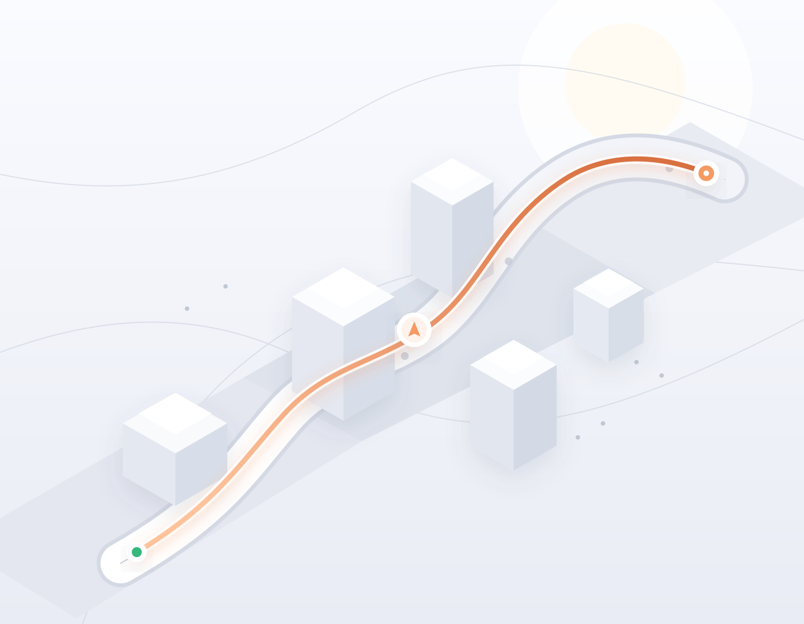

VANOMAPS
Web ativo · Android em preparaçãoCase 01 / MobilidadeMais contexto
Mais contexto
para cada rota.
O Vano ajuda a buscar destinos, comparar caminhos e acompanhar o trajeto. A experiência reúne navegação para carro, moto e a pé, alertas comunitários e informações da via.
Desenvolvo a interface, os serviços de rota, o backend e a estrutura de lançamento. O mesmo produto atende a web e a experiência Android.

Experiência
Busca de lugares, alternativas de rota, navegação e alertas.
Plataforma
Flask, PostgreSQL, JavaScript, Mapbox e fontes complementares.
Momento atual
Produto web disponível; versão Android em preparação para a Google Play.